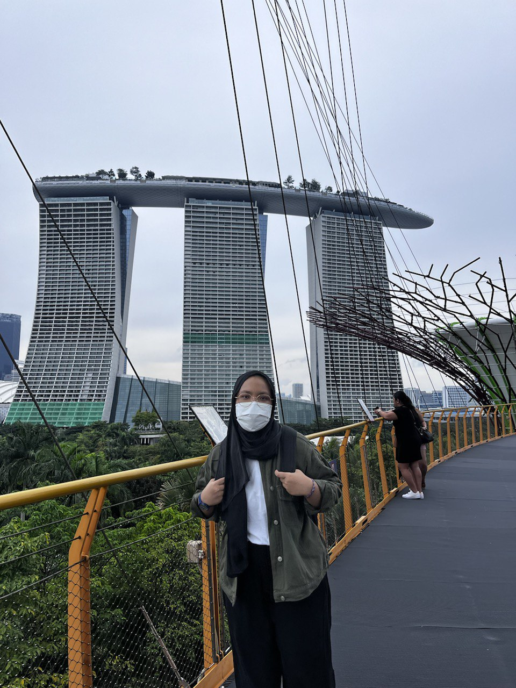
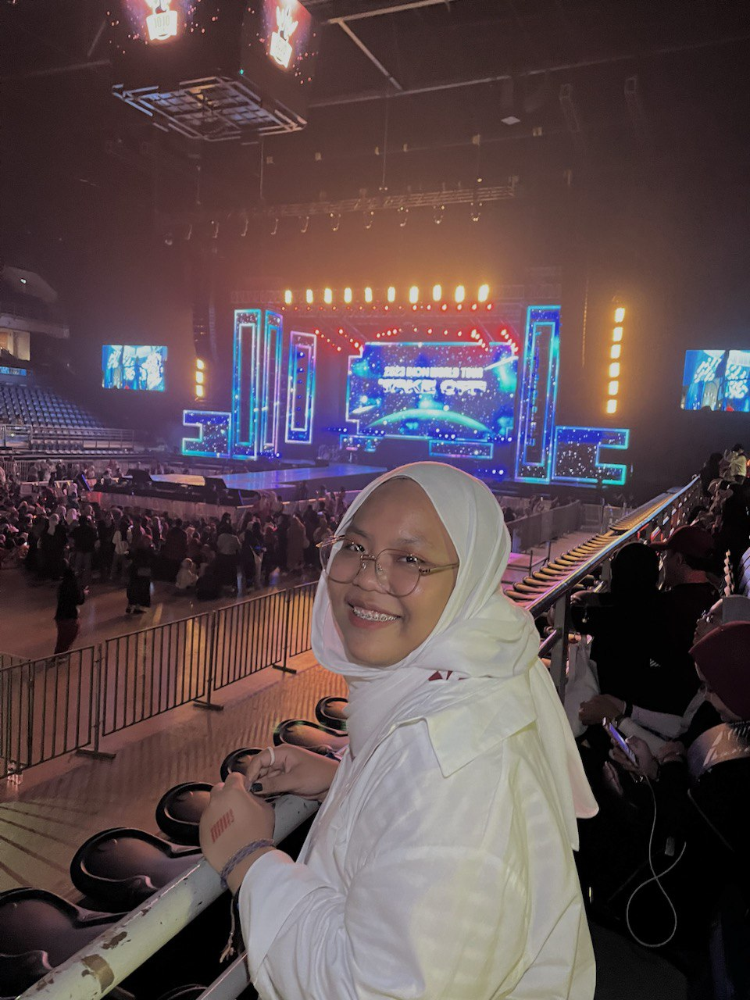
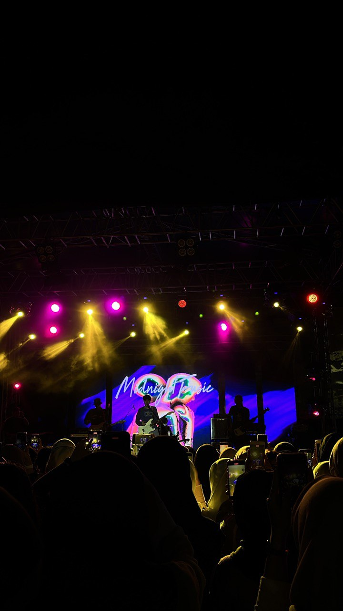
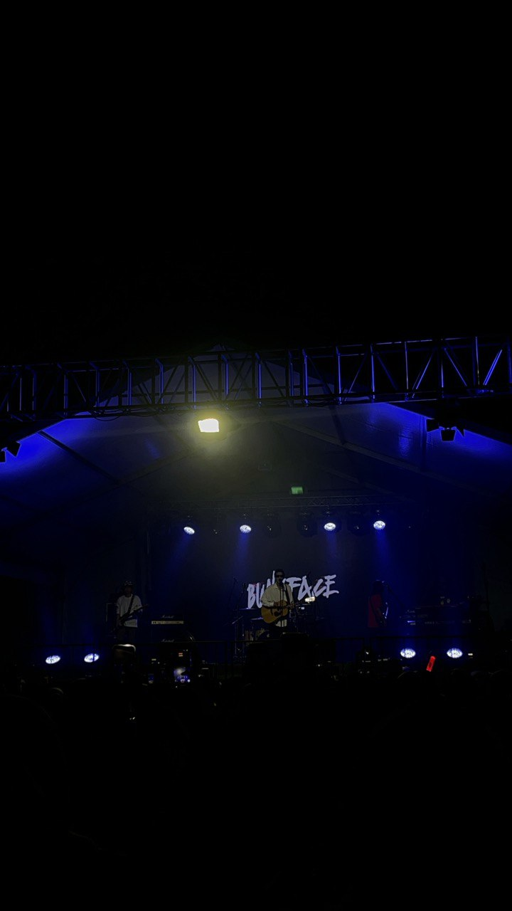

My Top 5 Favourite Foods
- Asam Pedas
- Sushi
- Icecream
- Soup
- Mala Hotpot
- My room in Johor
- Singapore's Soto Nasi Stall
- Book Cafe in Penang
- Perpustakaan Sultanah Zanariah
- Perpustakaan Raja Zarith Sofiah
My Top 5 places that I like and always visits !
Places that I visited in 2023 !
Singapore,I have 'kampung' in Singapore, so it is an annual routine to visit Singapore

2023 iKON WORLD TOUR' TAKE OFF IN KUALA LUMPUR
Pulau Langkawi with my housemates

Midnight Fusic's Concert
Bunkface's Concert
